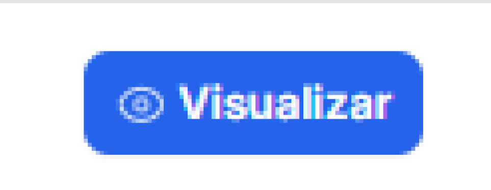

✔️ Como acessar o SIM
1. Entrar no SIM
Fazer seu login, com seu usuário
2. Selecionar a unidade
Selecionar a unidade onde você trabalha
✔️ Consultar Processos
Como consultar processos?
Clique no botão abaixo para acesso a tela de consulta de processos
Tela de Consulta de Processos
A tela de consulta de processos é composta por:
✔️ Caixa de Distribuição
1. Caixa de Distribuição - Acessar
Clique no botão abaixo para acesso a tela de consulta caixa de distribuição
2. Caixa de Distribuição - Ações
Ações disponíveis para cada processo na caixa de distribuição:
3. Caixa de Distribuição - Filtro
Como utilizar os filtros para encontrar processos específicos na caixa de distribuição - Opções de Status
Como utilizar os filtros para encontrar processos específicos na caixa de distribuição - Opções de Tribunal
4. Caixa de Distribuição - Distribuídos
Para acessar a área de processos distribuídos, clique no botão abaixo:
✔️ Petições Iniciais
1. Petições Iniciais - Acessar
Para acessar as petições iniciais, clique no menu lateral em "Petições Iniciais"
Tela de Petições Iniciais

2. Petições Iniciais - Criar Petição Inicial
Para criar uma nova petição inicial, clique no botão "Nova Petição Inicial"
Petições Iniciais - Dados da Petição
Aqui você pode informar os dados da petição inicial
Petições Iniciais - Assuntos CNMP
Aqui você pode selecionar o assunto da petição
Petições Iniciais - Adicionar Partes
Aqui você pode adicionar as partes da petição
Petições Iniciais - Características
Aqui você pode informar as características da petição
Petições Iniciais - Anexar Documentos
Aqui você pode anexar os documentos da petição
3. Petições Iniciais - Filtro
Como utilizar os filtros para encontrar petições específicas
Petições Iniciais - Filtro - Status
Como utilizar os filtros para encontrar petições específicas - Opções de Status
Petições Iniciais - Filtro - Tribunal
Como utilizar os filtros para encontrar petições específicas - Opções de Tribunal
4. Petições Iniciais - Ações
Ações disponíveis para cada petição inicial:
- Visualizar detalhes
- Logs MNI
✔️ Expedientes
1. Expedientes - Acessar
Clicar no botão abaixo para acessar a tela de expedientes
Expedientes - Tela
Tela de Expedientes
2. Expedientes - Filtro
Como utilizar os filtros para localizar expedientes específicos
Expedientes - Filtro - Status
Como utilizar os filtros para localizar expedientes específicos - Opções de Status
Expedientes - Filtro - Tribunal
Como utilizar os filtros para localizar expedientes específicos - Opções de Tribunal
3. Expedientes - Ações
Ações disponíveis para cada expediente:
- Visualizar
✔️ Petições Incidentais
1. Petições Incidentais - Acessar
Clicar no botão abaixo para acessar a tela de petições incidentais
Petições Incidentais - Tela
Tela de Petições Incidentais
2. Petições Incidentais - Criar Petição Incidental
Para criar uma nova petição incidental, clique no botão "Nova Petição Incidental"
Petições Incidentais - Dados da Petição
Aqui você pode informar os dados da petição, terá as opções de:
- Tribunal
- Numero do Processo
3. Petições Incidentais - Filtro
Como utilizar os filtros para encontrar petições incidentais específicas
3. Petições Incidentais - Filtro - Status
Como utilizar os filtros para encontrar petições incidentais específicas - Opções de Status
3. Petições Incidentais - Filtro - Tribunal
Como utilizar os filtros para encontrar petições incidentais específicas - Opções de Tribunal

4. Petições Incidentais - Visualizar
Como visualizar os detalhes de uma petição incidental
✔️ Credenciais Tribunais
1. Credenciais Tribunais - Acessar
Clicar no botão abaixo para acessar a seção de credenciais dos tribunais

1. Credenciais Tribunais - Tela
Tela de Credenciais Tribunais
2. Credenciais - Informar Credencial
Como informar as credenciais do tribunal
2. Credenciais - Fazer Cadastro
Como fazer login no sistema com as credenciais do tribunal
✔️ Relatórios
1. Relatórios - Acessar
Clicar no botão abaixo para acessar a seção de relatórios do sistema
1. Relatórios - Tela
Tela de Relatórios
2. Relatórios de Expedientes
Como gerar e visualizar relatórios de expedientes:
- Selecionar o status
3. Relatórios de Movimentos Taxonômicos
Como gerar e analisar relatórios de movimentos taxonômicos:
- Selecionar Período Atual
- Selecionar Período Final